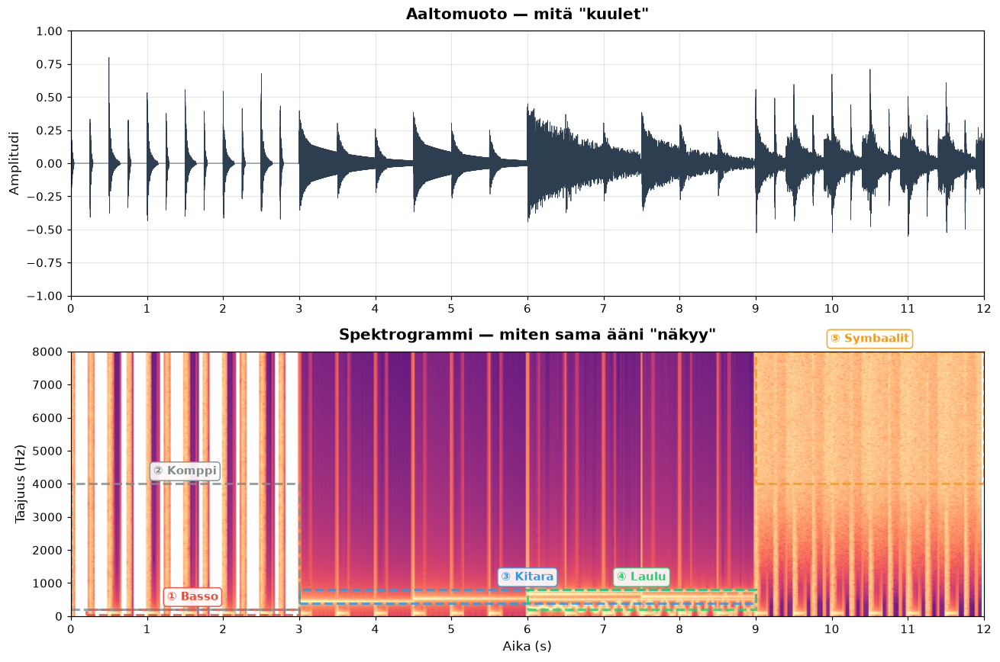
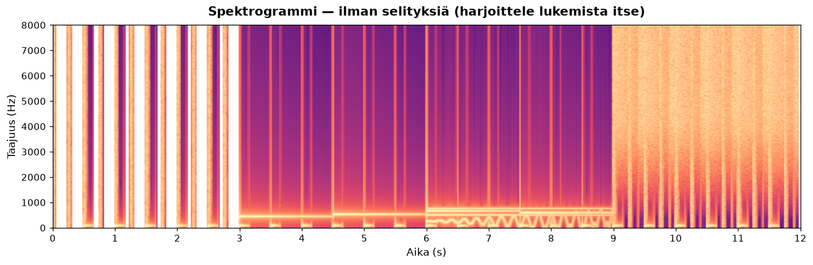

Oppitunti 0002 · AI-musiikin tuotanto · ~12 min lukuaikaa + harjoitus
Ydinajatus: spektrogrammi on silmällä luettava kartta äänestä. Kun opit muuntamaan kuulemasi näkemäksesi, pystyt diagnosoimaan AI-musiikin ongelmia — ja ennen kaikkea ymmärtämään, mitä mallin pitäisi tuottaa ja mitä se oikeasti tuottaa.
1. Miksi spektrogrammi, ei aaltomuoto?
Aaltomuoto (yllä) kertoo vain kuinka kovaa ääni on milläkin hetkellä. Ihminen kuulee kuitenkin taajuuden — sen, onko kyse matalasta bassosta vai kirkkaasta symbaalista. Aaltomuoto ei erota näitä toisistaan.
Spektrogrammi on Fourier-muunnoksen tulos: jokainen aikapiste (vaaka-akseli) puretaan taajuuskomponentteihin (pysty-akseli). Mitä tummempi/vaaleampi kohta, sitä enemmän energiaa sillä taajuudella on sillä hetkellä.
Aaltomuoto
Näkee: voimakkuuden ajassa
Sokea: taajuudelle, sävelkorkeudelle, soittimelle
Spektrogrammi
Näkee: taajuuden, ajan JA voimakkuuden
Sokea: vaiheelle (mutta ihminen ei sitä kuulekaan)
2. Viisi elementtiä, viisi aluetta
Alla on synteettinen 12 sekunnin demokappale, jossa jokainen elementti on sijoitettu tarkasti tunnistettavaan paikkaan sekä ajassa että taajuudessa:
Elementtien aikajärjestys ja taajuusalueet (avaa halutessasi)
① Basso · 0–3 s · 40–200 Hz
② Komppi · 0–3 s · transientit
③ Kitara · 3–9 s · 440–660 Hz
④ Laulu · 6–9 s · 200–800 Hz
⑤ Symbaalit · 9–12 s · 4–8 kHz
Annotoitu versio — katso ja kuuntele samaan aikaan

3. Mitä kukin elementti "näyttää"
Tässä on tiivistys — lue nämä ensin, palaa sitten kuvaan:
Basso näkyy kapeana vaakajuovana alhaalla. Matalat taajuudet eivät vaihtele paljon, joten viiva pysyy tasaisena — kuin punainen viiva kartalla.
Komppi / rummut näkyvät pystyviivoina koko korkeudella. Jokainen isku on lyhyt transientti — koko taajuuskaista aktivoituu hetkellisesti ja vaimenee.
Kitara / melodia näkyy vaakasuorana viivana keskikorkeudella. Sävelen taajuus pysyy vakiona niin kauan kuin nuotti soi — tämä on melodian "sormenjälki".
Laulu näkyy kapeampana ja epäsäännöllisempänä juovana kitaran päällä. Vibrato näkyy viivan pienenä aaltoiluna ylös-alas.
Symbaalit / korkeat äänet näkyvät vaaleana "utuna" ylhäällä. Korkeataajuinen kohina ei ole järjestäytynyttä — se muistuttaa rakeisuutta tai sumua.
4. Harjoitus: lue itse
Harjoitus A — Spektrogrammi ilman selityksiä
Tässä on sama kappale ilman värejä ja laatikoita. Yritä tunnistaa samat viisi elementtiä:

Kysymykset:
Missä ajankohdassa basso loppuu ja kitara alkaa?
Mistä tiedät, että laulu soi kitaran päällä eikä sen sijaan?
Mitä eroa on symbaalien ja kompin transienttien välillä visuaalisesti?
Vastaukset löytyvät alempaa (avaa spoileri vasta kun olet yrittänyt).
📋 Vastaukset (älä avaa vielä!)
Noin 3.0 sekunnin kohdalla — tummien pystyviivojen sarja loppuu ja tilalle tulee yhtenäisempi vaakajuova keskelle.
Laulun "värähtely" näkyy viivan paksuuden ja korkeuden aaltoiluna, kitaran viiva on tasaisempi. Lisäksi laulu näkyy alempana (200-800 Hz) kuin korkein kitaran nuotti.
Komppi on terävä, kapea pystyviiva. Symbaalit ovat leveä "vaalea sumu" korkeilla taajuuksilla — ei viivoja, vaan jatkuvaa energiaa.
5. Miksi tämä taito on kullanarvoinen AI-musiikissa
Kun kuuntelet AI-musiikkia, voit nyt avata minkä tahansa ilmaisen työcalun (Audacity, Sonic Visualiser, jopa Python + librosa) ja nähdä, mitä malli teki. Esimerkkejä:
Jos spektrogrammissa näkyy tasainen ruskea palkki tietyllä taajuudella → kyseessä on todennäköisesti virheellinen toisto (overfit/loop)
Jos laulun kaista on liian kapea eikä liiku → malli ei ole oppinut melodista liikettä laululle
Jos transientit puuttuvat kokonaan → malli tuottaa liian pehmeää ambient-jälkeä, vaikka pyysit rumpuja
Jos korkeat taajuudet ovat liian voimakkaita → säröä tai ei masteroitu
Tämä on diagnostinen työkalu, joka erottaa harrastajan ammattilaisesta.
6. Mitä seuraavaksi?
Seuraavassa oppitunnissa (0003) siirrytään konkreettiin tekemiseen: Suno-promptitiede. Opit muotoilemaan tyyliprompteja niin, että lopputulos osuu haluttuun tunnelmaan — käyttäen spektrogrammin ymmärrystä apuna.